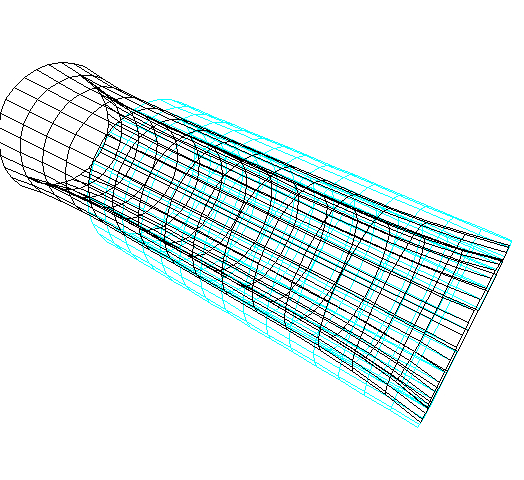
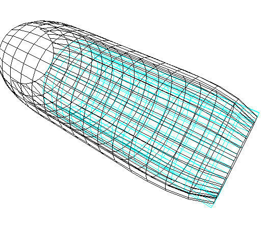
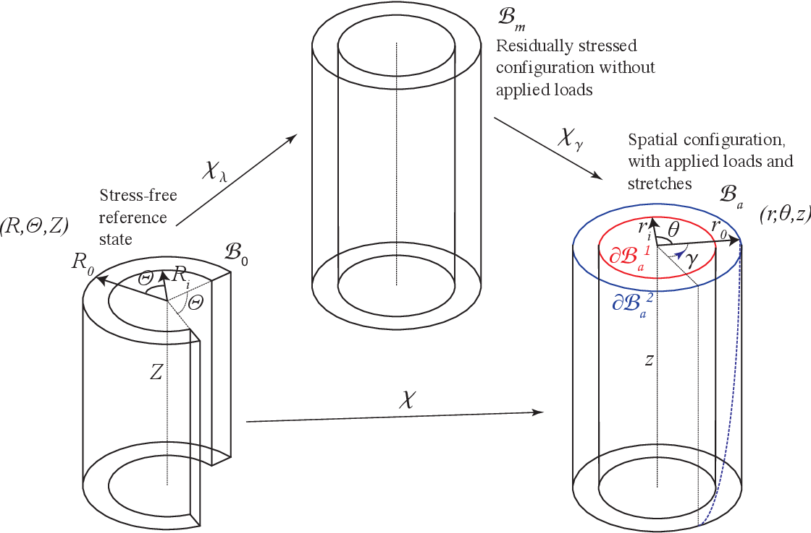
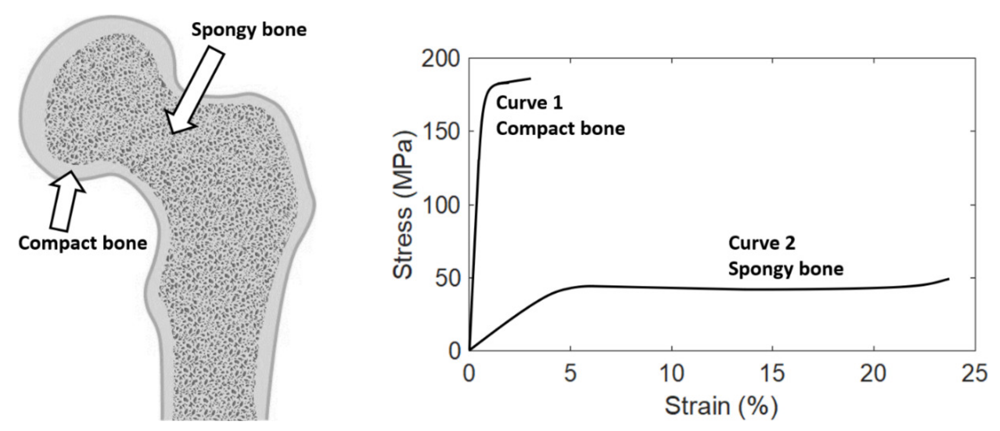
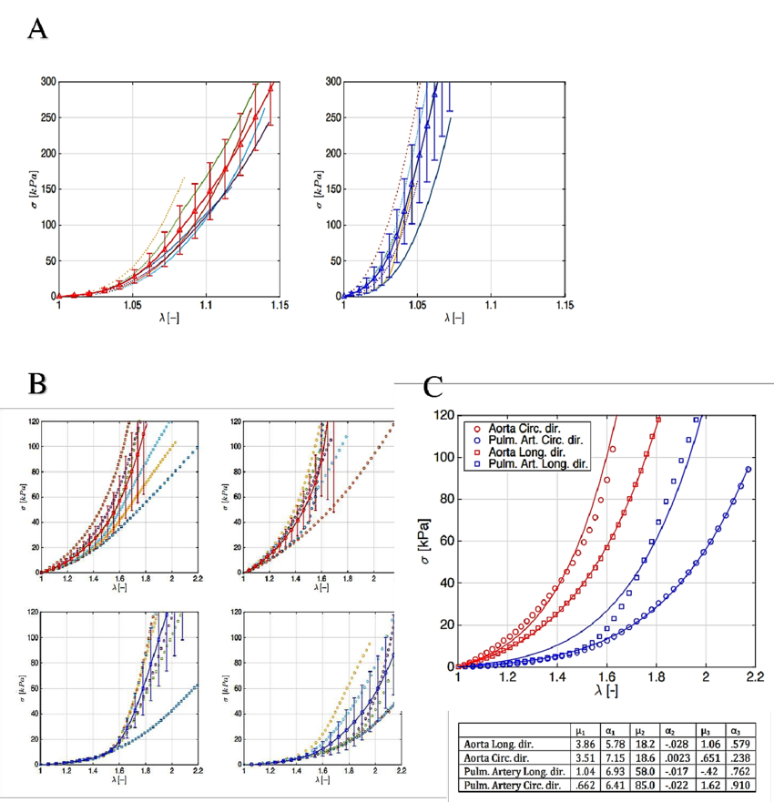
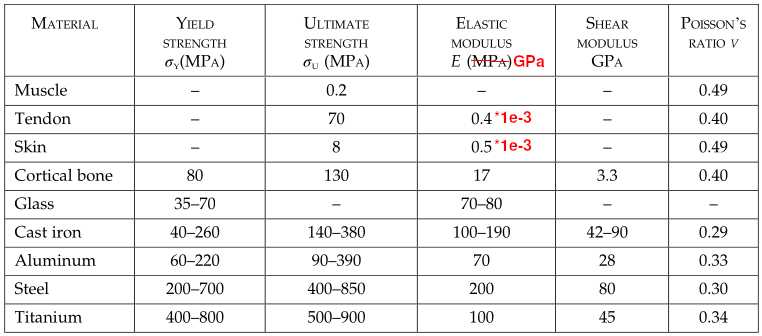

Ask AI:
What is strain? How many types of strain are there and how are they related with stresses?
A line segment is used to measure the normal strain.
A line segment is used to measure the normal strain.
Deformation of a computational artery model under combined axial extension/inflation:


Deformation of a theoretical artery model under torsion:

In general, for biological tissues, we can separate the deformation response to mechanical loading to two types.


Nearly all materials show an elastic response at an early (low) stage of loading.

Ask AI:
By the end of this lecture students should be able to: